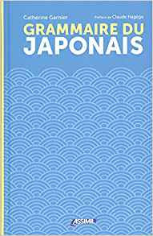

Aides à l'apprentissage du japonais
Pour apprendre le japonais, il faut visiter différents horizons ! Petit tour des sources et des aides sur lesquelles je m’appuie.
Les chaînes Youtube
Je crois que ce sont les sources les plus faciles d’accès et les plus ludiques.
J’en ai déjà beaucoup parlé dans mes vidéos, je vais le redire ici, il faut absolument aller voir les vidéos de Julien Fontanier sur sa chaîne Apprendre le japonais ! Voici le lien.
En plus, il propose des exercices très bien faits et assez intuitifs pour l’apprentissage des kana, dans un premier temps. Je ne doute pas que pour la suite, il y aura aussi de quoi s’exercer.
Il y a aussi la chaîne de Misa, peut-être un peu plus dure à appréhender, car tout est en anglais.
J’aime bien la chaîne de David Le Japon fou fou fou parce qu’il vit sur place, il est très sympa et il nous apprend quelques trucs de la vie de tous les jours sans pour autant nous faire des leçons de japonais. J’ai un peu moins l’impression d’être à l’école :D
Il y a aussi la chaîne de Pierre Emerald que je regarde un peu moins. Ses vidéos sur l’écriture des kana m’ont beaucoup aidée pour apprendre les tracés.
Les livres
Alors là, il y en a toute une ribambelle ! Je ne les ai pas tous. Dans ceux que j’ai, je ne les ai pas tous ouverts ! Je ne sais pas lesquels sont bons, pratiques, etc.
Je vais juste en citer quelques uns, au cas où tu ne les connaîtrais pas ou que tu n’aurais pas trop d’idées. Ils traitent tous plus ou moins d’un sujet en particulier, et tous ensemble, ils sont censés te permettre de connaître le japonais, pas mal, non ?
Dans tous les cas, je trouve que c’est un peu difficile d’utiliser les manuels de manière assidue. Je dois être une très mauvaise élève !
Le japonais en manga comporte des leçons assez simplifiées sur le japonais avec des exemples en manga. Je n’ai pas pris le second volume parce que j’avais un peu de mal à accrocher.
La grammaire du japonais, je ne l’ai pas encore ouvert, tu penses bien ! Mais il est censé m’aider à apprendre la grammaire japonaise avec toutes les particules un peu bizarroïdes que l’on croise parfois dans les textes qu’on arrive à peu près à lire :D
Kanji Kakitai ! Pas encore ouvert non plus ! L’apprentissage des kanji, c’est un peu compliqué. Je m’y suis mise, doucement, et j’utilise d’autres outils pour l’instant. Je vois ce manuel plus comme une sorte de dictionnaire des kanji, un peu comme le Kanji to kana que j’aimerais bien acquérir un jour aussi.
Il existe aussi un cahier d’exercices. Il servira quand j’utiliserai vraiment le manuel !
40 leçons pour parler japonais comporte un index assez pratique qui fait que, dès que tu te poses une question sur la formation d’une phrase, sur un temps ou quoique ce soit d’autre, tu peux facilement trouver la réponse dans le livre. Il y a aussi quelques exemples de phrases typiques qui peuvent servir pour un voyage au Japon.
Et enfin la méthode ASSIMIL comprend un support écrit et des conversations enregistrées, pour bien prononcer le japonais ! Les premières leçons sont très accessibles. La suite… Bah, je dois m’accrocher !
La culture japonaise
Regarder des anime, des drama ou lire des manga ou des romans en japonais peut aussi aider à apprendre !
J’adore regarder en japonais avec les sous-titres français. Je ne désespère pas de virer les sous-titres un jour :D
Et toi, tu utilises quoi pour t’aider à apprendre ?